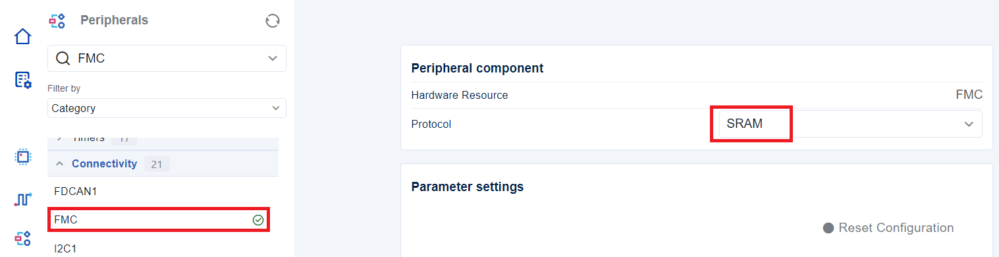
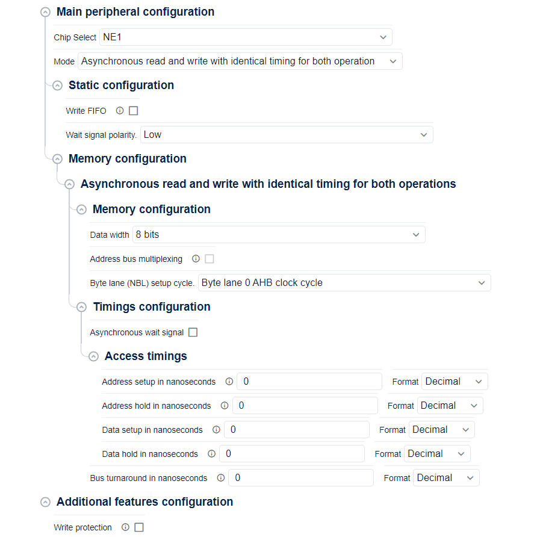

HAL SRAM initialization and configuration functions migration ¶
Note
There is four configurations that can be done in HAL SRAM:
Asynchronous memory
HAL_SRAM_SetConfigRdWrAsyncMemory().Synchronous memory
HAL_SRAM_SetConfigRdWrSyncMemory().Synchronous/Asynchronous memory
HAL_SRAM_SetConfigRdSyncWrAsyncMemory().Asynchronous/Synchronous memory
HAL_SRAM_SetConfigRdAsyncWrSyncMemory().
The instance have been changed from bank in HAL1 to sub-bank in HAL2.
The goal of this page is to show how to migrate the Init sequence using STM32CubeMX2 :
-
Open STM32CubeMX2 SRAM configuration panel
-
Configure the SW layer HAL/LL
-
Configure SRAM basic features
-
Configure SRAM advanced features
-
Generate the code
Preliminary setup steps ¶
Create a new project with STM32CubeMX2 , then proceed with initialization and configuration.

Start SRAM configuration ¶
Select the SRAM to start the configuration.


Configuration of the software layer and resource initialisation ¶
The SRAM can be configured using the default settings or customized according to user specifications.
-
Default configuration :


Generated SRAM init and de-init sequences ¶
The SRAM initialisation and de-initialisation sequences are generated in the
mx_fmc_bank1_sub1_hal_sram_init
function in
mx_fmc.c
file under
$PROJ_DIR$/generated/hal
.
Note
Related concept :
-
Default configuration :
SRAM Initialization, configuration and Msp sequences ¶
Note
Example: This configuration is reserved to STM32U5 (Specific Pins)
|
HAL1 code snippet |
HAL2 code snippet |
|---|---|
/* FMC initialization function */
static void MX_FMC_Init(void)
{
FMC_NORSRAM_TimingTypeDef Timing = {0};
/** Perform the SRAM1 memory initialization sequence */
hsram1.Instance =
FMC_NORSRAM_DEVICE;
hsram1.Extended =
FMC_NORSRAM_EXTENDED_DEVICE;
/* hsram1.Init */
hsram1.Init.NSBank =
FMC_NORSRAM_BANK1;
hsram1.Init.DataAddressMux =
FMC_DATA_ADDRESS_MUX_DISABLE;
hsram1.Init.MemoryType =
FMC_MEMORY_TYPE_SRAM;
hsram1.Init.MemoryDataWidth =
FMC_NORSRAM_MEM_BUS_WIDTH_16;
hsram1.Init.BurstAccessMode =
FMC_BURST_ACCESS_MODE_DISABLE;
hsram1.Init.WaitSignalPolarity =
FMC_WAIT_SIGNAL_POLARITY_LOW;
hsram1.Init.WaitSignalActive =
FMC_WAIT_TIMING_BEFORE_WS;
hsram1.Init.WriteOperation =
FMC_WRITE_OPERATION_DISABLE;
hsram1.Init.WaitSignal =
FMC_WAIT_SIGNAL_DISABLE;
hsram1.Init.ExtendedMode =
FMC_EXTENDED_MODE_DISABLE;
hsram1.Init.AsynchronousWait =
FMC_ASYNCHRONOUS_WAIT_DISABLE;
hsram1.Init.WriteBurst =
FMC_WRITE_BURST_DISABLE;
hsram1.Init.ContinuousClock =
FMC_CONTINUOUS_CLOCK_SYNC_ONLY;
hsram1.Init.WriteFifo =
FMC_WRITE_FIFO_ENABLE;
hsram1.Init.NBLSetupTime = 0;
hsram1.Init.PageSize =
FMC_PAGE_SIZE_NONE;
hsram1.Init.MaxChipSelectPulse =
DISABLE;
/* Timing */
Timing.AddressSetupTime = 15;
Timing.AddressHoldTime = 15;
Timing.DataSetupTime = 255;
Timing.DataHoldTime = 0;
Timing.BusTurnAroundDuration = 15;
Timing.CLKDivision = 16;
Timing.DataLatency = 17;
Timing.AccessMode = FMC_ACCESS_MODE_A;
/* ExtTiming */
if (HAL_SRAM_Init(&hsram1, &Timing, NULL) != HAL_OK)
{
Error_Handler( );
}
}
|
hal_sram_handle_t *mx_fmc_bank1_sub1_hal_sram_init(void)
{
hal_sram_config_t sram_config;
if (HAL_SRAM_Init(&hSRAM1, HAL_SRAM1) != HAL_OK)
{
return NULL;
}
sram_config.memory_type =
HAL_SRAM_MEMORY_TYPE_SRAM;
sram_config.write_fifo =
HAL_SRAM_WRITE_FIFO_DISABLE;
sram_config.wait_signal_polarity =
HAL_SRAM_WAIT_SIGNAL_POLARITY_LOW;
if (HAL_SRAM_SetConfig(&hSRAM1, &sram_config) != HAL_OK)
{
return NULL;
}
/* Asynchronous read and write with timing for operation */
hal_sram_rd_wr_async_memory_config_t p_config;
p_config.memory.data_width =
HAL_SRAM_MEMORY_BUS_WIDTH_8_BIT;
p_config.memory.mux_mode =
HAL_SRAM_MUX_DATA_ADDR_DISABLE;
p_config.memory.byte_lane_setup_cycle =
HAL_SRAM_BYTE_LANE_SRC_CLK_0_CYCLE;
p_config.timings.async_access_timings.addr_setup_nsec = 0;
p_config.timings.async_access_timings.addr_hold_nsec = 0;
p_config.timings.async_access_timings.data_setup_nsec = 0;
p_config.timings.async_access_timings.data_hold_nsec = 0;
p_config.timings.async_wait =
HAL_SRAM_ASYNC_WAIT_SIGNAL_DISABLE;
p_config.timings.bus_turnaround_nsec = 0;
if (HAL_SRAM_SetConfigRdWrAsyncMemory(&hSRAM1, &p_config) !=
HAL_OK)
{
return NULL;
}
HAL_SRAM_EnableMemory(&hSRAM1);
/* FMC GPIO Configuration ***************************************/
HAL_RCC_GPIOD_EnableClock();
HAL_RCC_GPIOF_EnableClock();
HAL_RCC_GPIOG_EnableClock();
HAL_RCC_GPIOE_EnableClock();
HAL_RCC_GPIOB_EnableClock();
hal_gpio_config_t gpio_config;
gpio_config.mode = HAL_GPIO_MODE_ALTERNATE;
gpio_config.output_type = HAL_GPIO_OUTPUT_PUSHPULL;
gpio_config.pull = HAL_GPIO_PULL_NO;
gpio_config.speed = HAL_GPIO_SPEED_FREQ_LOW;
gpio_config.alternate = HAL_GPIO_AF_12;
HAL_GPIO_Init(HAL_GPIOD,
HAL_GPIO_PIN_7 | HAL_GPIO_PIN_11 | HAL_GPIO_PIN_12 |
HAL_GPIO_PIN_13 | HAL_GPIO_PIN_3 | HAL_GPIO_PIN_14 |
HAL_GPIO_PIN_15 | HAL_GPIO_PIN_0 | HAL_GPIO_PIN_1 |
HAL_GPIO_PIN_4 | HAL_GPIO_PIN_6 | HAL_GPIO_PIN_5,
&gpio_config);
gpio_config.mode = HAL_GPIO_MODE_ALTERNATE;
gpio_config.output_type = HAL_GPIO_OUTPUT_PUSHPULL;
gpio_config.pull = HAL_GPIO_PULL_NO;
gpio_config.speed = HAL_GPIO_SPEED_FREQ_LOW;
gpio_config.alternate = HAL_GPIO_AF_12;
HAL_GPIO_Init(HAL_GPIOF,
HAL_GPIO_PIN_0 | HAL_GPIO_PIN_1 | HAL_GPIO_PIN_2 |
HAL_GPIO_PIN_3 | HAL_GPIO_PIN_4 | HAL_GPIO_PIN_5 |
HAL_GPIO_PIN_12 | HAL_GPIO_PIN_13 |
HAL_GPIO_PIN_14 | HAL_GPIO_PIN_15,
&gpio_config);
gpio_config.mode = HAL_GPIO_MODE_ALTERNATE;
gpio_config.output_type = HAL_GPIO_OUTPUT_PUSHPULL;
gpio_config.pull = HAL_GPIO_PULL_NO;
gpio_config.speed = HAL_GPIO_SPEED_FREQ_LOW;
gpio_config.alternate = HAL_GPIO_AF_12;
HAL_GPIO_Init(HAL_GPIOG,
HAL_GPIO_PIN_0 | HAL_GPIO_PIN_1 | HAL_GPIO_PIN_2 |
HAL_GPIO_PIN_3 | HAL_GPIO_PIN_4 | HAL_GPIO_PIN_5,
&gpio_config);
gpio_config.mode = HAL_GPIO_MODE_ALTERNATE;
gpio_config.output_type = HAL_GPIO_OUTPUT_PUSHPULL;
gpio_config.pull = HAL_GPIO_PULL_NO;
gpio_config.speed = HAL_GPIO_SPEED_FREQ_LOW;
gpio_config.alternate = HAL_GPIO_AF_12;
HAL_GPIO_Init(HAL_GPIOE,
HAL_GPIO_PIN_3 | HAL_GPIO_PIN_4 | HAL_GPIO_PIN_5 |
HAL_GPIO_PIN_6 | HAL_GPIO_PIN_2 | HAL_GPIO_PIN_7 |
HAL_GPIO_PIN_8 | HAL_GPIO_PIN_9 | HAL_GPIO_PIN_10 |
HAL_GPIO_PIN_0,
&gpio_config);
gpio_config.mode = HAL_GPIO_MODE_ALTERNATE;
gpio_config.output_type = HAL_GPIO_OUTPUT_PUSHPULL;
gpio_config.pull = HAL_GPIO_PULL_NO;
gpio_config.speed = HAL_GPIO_SPEED_FREQ_LOW;
gpio_config.alternate = HAL_GPIO_AF_11;
HAL_GPIO_Init(HAL_GPIOB, HAL_GPIO_PIN_15, &gpio_config);
return &hSRAM1;
}
|
SRAM Deinitialization sequence ¶
|
HAL1 code snippet |
HAL2 code snippet |
|---|---|
static void HAL_FMC_MspDeInit(void)
{
if (FMC_DeInitialized) {
return;
}
FMC_DeInitialized = 1;
/* Peripheral clock enable */
__HAL_RCC_FMC_CLK_DISABLE();
HAL_GPIO_DeInit(GPIOD, GPIO_PIN_0 | GPIO_PIN_1 | GPIO_PIN_4 |
GPIO_PIN_5 | GPIO_PIN_7 | GPIO_PIN_8 |
GPIO_PIN_9 | GPIO_PIN_10 | GPIO_PIN_11 |
GPIO_PIN_12 | GPIO_PIN_13 |GPIO_PIN_14 |
GPIO_PIN_15);
HAL_GPIO_DeInit(GPIOE, GPIO_PIN_0 | GPIO_PIN_1 | GPIO_PIN_3 |
GPIO_PIN_6 | GPIO_PIN_7 | GPIO_PIN_8 |
GPIO_PIN_9 | GPIO_PIN_10 | GPIO_PIN_11 |
GPIO_PIN_12 | GPIO_PIN_13 | GPIO_PIN_14 |
GPIO_PIN_15);
HAL_GPIO_DeInit(GPIOF, GPIO_PIN_0 | GPIO_PIN_1 | GPIO_PIN_2 |
GPIO_PIN_3 | GPIO_PIN_4 | GPIO_PIN_5 |
GPIO_PIN_12 | GPIO_PIN_13 |
GPIO_PIN_14 | GPIO_PIN_15);
HAL_GPIO_DeInit(GPIOG, GPIO_PIN_0 | GPIO_PIN_1 | GPIO_PIN_2 |
GPIO_PIN_3 | GPIO_PIN_4 | GPIO_PIN_5 |
GPIO_PIN_12);
}
void HAL_SRAM_MspDeInit(SRAM_HandleTypeDef* hsram)
{
HAL_FMC_MspDeInit();
}
static void MX_FMC_DeInit(void)
{
/* Deinitialize the SRAM peripheral */
if (HAL_SRAM_DeInit(&hsram1) != HAL_OK)
{
Error_Handler();
}
}
|
void mx_fmc_bank1_sub1_hal_sram_deinit(void)
{
/* FMC GPIO Configuration ******************************/
HAL_GPIO_DeInit(HAL_GPIOD, HAL_GPIO_PIN_0 | HAL_GPIO_PIN_1 |
HAL_GPIO_PIN_3 | HAL_GPIO_PIN_4 |
HAL_GPIO_PIN_5 | HAL_GPIO_PIN_6 |
HAL_GPIO_PIN_7 | HAL_GPIO_PIN_11 |
HAL_GPIO_PIN_12 | HAL_GPIO_PIN_13 |
HAL_GPIO_PIN_14 | HAL_GPIO_PIN_15);
HAL_GPIO_DeInit(HAL_GPIOE, HAL_GPIO_PIN_0 | HAL_GPIO_PIN_2 |
HAL_GPIO_PIN_3 | HAL_GPIO_PIN_4 |
HAL_GPIO_PIN_5 | HAL_GPIO_PIN_6 |
HAL_GPIO_PIN_7 | HAL_GPIO_PIN_8 |
HAL_GPIO_PIN_9 | HAL_GPIO_PIN_10);
HAL_GPIO_DeInit(HAL_GPIOF, HAL_GPIO_PIN_0 | HAL_GPIO_PIN_1 |
HAL_GPIO_PIN_2 | HAL_GPIO_PIN_3 |
HAL_GPIO_PIN_4 | HAL_GPIO_PIN_5 |
HAL_GPIO_PIN_12 | HAL_GPIO_PIN_13 |
HAL_GPIO_PIN_14 | HAL_GPIO_PIN_15);
HAL_GPIO_DeInit(HAL_GPIOG, HAL_GPIO_PIN_0 | HAL_GPIO_PIN_1 |
HAL_GPIO_PIN_2 | HAL_GPIO_PIN_3 |
HAL_GPIO_PIN_4 | HAL_GPIO_PIN_5);
/* Deinitialization of FMC: FMC_NBL1 */
HAL_GPIO_DeInit(HAL_GPIOB, HAL_GPIO_PIN_15);
HAL_SRAM_DeInit(&hSRAM1);
}
|
All subbanks configuration ¶
|
HAL1 code snippet |
HAL2 code snippet |
|---|---|
HAL_Init();
// --- SRAM bank (1) and sub-banks Initialization SRAMx (x = 1 to 4) ---
for (int i = 0; i < 4; i++)
{
hsram[i].Instance = FMC_NORSRAM_DEVICE;
hsram[i].Extended = FMC_NORSRAM_EXTENDED_DEVICE;
hsram[i].Init.NSBank = FMC_NORSRAM_BANK1 + i;
hsram[i].Init.DataAddressMux = FMC_DATA_ADDRESS_MUX_DISABLE;
hsram[i].Init.WriteOperation = FMC_WRITE_OPERATION_ENABLE;
hsram[i].Init.BurstAccessMode = FMC_BURST_ACCESS_MODE_DISABLE;
hsram[i].Init.WrapMode = FMC_WRAP_MODE_DISABLE;
hsram[i].Init.WaitSignalActive = FMC_WAIT_TIMING_BEFORE_WS;
hsram[i].Init.WaitSignal = FMC_WAIT_SIGNAL_DISABLE;
hsram[i].Init.ExtendedMode = FMC_EXTENDED_MODE_DISABLE;
hsram[i].Init.WriteBurst = FMC_WRITE_BURST_DISABLE;
hsram[i].Init.ContinuousClock = FMC_CONTINUOUS_CLOCK_SYNC_ONLY;
// Fill static configuration
hsram[i].Init.MemoryType = FMC_MEMORY_TYPE_SRAM;
/* ---------------------------------------------------------- */
hsram[i].Init.WaitSignalPolarity = FMC_WAIT_SIGNAL_POLARITY_LOW;
// Fill memory configuration
hsram[i].Init.MemoryDataWidth = FMC_NORSRAM_MEM_BUS_WIDTH_16;
/* ---------------------------------------------------------- */
/* ---------------------------------------------------------- */
/* ---------------------------------------------------------- */
/* ---------------------------------------------------------- */
hsram[i].Init.AsynchronousWait = FMC_ASYNCHRONOUS_WAIT_DISABLE;
Sram_Timing.AddressSetupTime = 2;
Sram_Timing.AddressHoldTime = 1;
Sram_Timing.DataSetupTime = 2;
Sram_Timing.DataHoldTime = 1;
Sram_Timing.BusTurnAroundDuration = 1;
Sram_Timing.CLKDivision = 2;
Sram_Timing.DataLatency = 2;
/* Optional: Set different write timings if needed */
Sram_Wr_Timing.AddressSetupTime = 3;
Sram_Wr_Timing.AddressHoldTime = 1;
Sram_Wr_Timing.DataSetupTime = 3;
Sram_Wr_Timing.DataHoldTime = 1;
Sram_Wr_Timing.BusTurnAroundDuration = 1;
Sram_Wr_Timing.AccessMode = FMC_ACCESS_MODE_A;
/* ---------------------------------------------------------- */
/* ---------------------------------------------------------- */
/* ---------------------------------------------------------- */
/* ---------------------------------------------------------- */
HAL_SRAM_Init(&hsram[i], &Sram_Timing, &Sram_Wr_Timing);
}
|
HAL_Init();
// Initialize the SRAM handle and associate to the HAL_SRAMx instance
for (int i = 0; i < 4; i++)
{
HAL_SRAM_Init(&hsram[i], (hal_sram_t)(HAL_SRAM1 + i));
}
// === Configuration ===
for (int i = 0; i < 4; i++)
{
/* ---------------------------------------------------------- */
/* ---------------------------------------------------------- */
/* ---------------------------------------------------------- */
/* ---------------------------------------------------------- */
/* ---------------------------------------------------------- */
/* ---------------------------------------------------------- */
// Fill static configuration of FMC peripheral
sram_config[i].memory_type = HAL_SRAM_MEMORY_TYPE_SRAM;
sram_config[i].write_fifo = HAL_SRAM_WRITE_FIFO_DISABLE;
sram_config[i].wait_signal_polarity = HAL_SRAM_WAIT_SIGNAL_POLARITY_LOW;
/* Fill memory configuration */
sram_mem_config[i].memory.data_width = HAL_SRAM_MEMORY_BUS_WIDTH_16_BIT;
sram_mem_config[i].memory.cram_page_size_byte = HAL_SRAM_PAGE_SIZE_NONE;
sram_mem_config[i].memory.mux_mode = HAL_SRAM_MUX_DATA_ADDR_DISABLE;
sram_mem_config[i].memory.byte_lane_setup_cycle = HAL_SRAM_BYTE_LANE_SRC_CLK_0_CYCLE;
sram_mem_config[i].memory.psram_chipsel_maxpulse_nsec = 0;
sram_mem_config[i].timings.async_wait = HAL_SRAM_ASYNC_WAIT_SIGNAL_DISABLE;
sram_mem_config[i].timings.async_access_timings.addr_setup_nsec = 20;
sram_mem_config[i].timings.async_access_timings.addr_hold_nsec = 10;
sram_mem_config[i].timings.async_access_timings.data_setup_nsec = 20;
sram_mem_config[i].timings.async_access_timings.data_hold_nsec = 10;
sram_mem_config[i].timings.bus_turnaround_nsec = 10;
/* ---------------------------------------------------------- */
/* ---------------------------------------------------------- */
/* Optional: Set different write timings if needed */
sram_wr_timings[i].async_access_timings.addr_setup_nsec = 30;
sram_wr_timings[i].async_access_timings.addr_hold_nsec = 10;
sram_wr_timings[i].async_access_timings.data_setup_nsec = 30;
sram_wr_timings[i].async_access_timings.data_hold_nsec = 10;
sram_wr_timings[i].bus_turnaround_nsec = 10;
sram_wr_timings[i].read_access_mode = HAL_SRAM_ACCESS_MODE_A;
sram_wr_timings[i].write_access_mode = HAL_SRAM_ACCESS_MODE_A;
HAL_SRAM_SetConfig(&hsram[i], &sram_config[i]); // FMC peripheral configuration
HAL_SRAM_SetConfigRdWrAsyncMemory(&hsram[i], &sram_mem_config[i]);
HAL_SRAM_SetWrAsyncTimings(&hsram[i], &sram_wr_timings[i]); //Optional
HAL_SRAM_EnableMemory(&hsram[i]); // Enable the SRAM sub-bank x
}
|
Timing configuration adjustment ¶
|
HAL1 |
HAL2 |
|---|---|
// Write data to the SRAM memory
if (HAL_SRAM_Write_8b(&hsram,
(uint32_t *)(target_address),
data_to_write, BufferSize) != HAL_OK)
{
// Deinit the SRAM memory
HAL_SRAM_DeInit(&hsram);
// Adjust the timing configuration
Sram_Timing.AddressSetupTime = 2;
Sram_Timing.AddressHoldTime = 1;
Sram_Timing.DataSetupTime = 2;
/* ---------------------------------------------------- */
Sram_Timing.BusTurnAroundDuration = 1;
Sram_Timing.CLKDivision = 2;
Sram_Timing.DataLatency = 2;
Sram_Timing.AccessMode = FMC_ACCESS_MODE_A;
/* ---------------------------------------------------- */
/* ---------------------------------------------------- */
/* ---------------------------------------------------- */
/* ---------------------------------------------------- */
/* ---------------------------------------------------- */
/* ---------------------------------------------------- */
/* ---------------------------------------------------- */
// Reinitialize SRAM with correct timing
HAL_SRAM_Init(&hsram, &Sram_Timing, NULL);
// Retry write operation
HAL_SRAM_Write_16b(&hsram,
(uint32_t *)(target_address),
data_to_write,
BufferSize
);
}
|
// This API should be defined by the user
if (SRAM_Write_16b(&hsram,
(uint32_t *)(target_address),
data_to_write, BufferSize) != HAL_OK)
{
// Disable the SRAM memory
HAL_SRAM_DisableMemory(&hsram);
// Adjust the timing configuration
sram_mem_config.timings.async_access_timings.addr_setup_nsec = 20;
sram_mem_config.timings.async_access_timings.addr_hold_nsec = 10;
sram_mem_config.timings.async_access_timings.data_setup_nsec = 20;
sram_mem_config.timings.async_access_timings.data_hold_nsec = 10;
sram_mem_config.timings.bus_turnaround_nsec = 1;
/* ---------------------------------------------------------- */
/* ---------------------------------------------------------- */
/* ---------------------------------------------------------- */
sram_mem_config.timings.async_wait = HAL_SRAM_ASYNC_WAIT_SIGNAL_DISABLE;
sram_mem_config.memory.data_width = HAL_SRAM_MEMORY_BUS_WIDTH_16_BIT;
sram_mem_config.memory.cram_page_size_byte = HAL_SRAM_PAGE_SIZE_NONE;
sram_mem_config.memory.mux_mode = HAL_SRAM_MUX_DATA_ADDR_DISABLE;
sram_mem_config.memory.byte_lane_setup_cycle = HAL_SRAM_BYTE_LANE_SRC_CLK_0_CYCLE;
sram_mem_config.memory.psram_chipsel_maxpulse_nsec = 0;
HAL_SRAM_SetConfigRdWrAsyncMemory(&hsram, &sram_mem_config);
// Enable the corresponding SRAM sub-bank
HAL_SRAM_EnableMemory(&hsram);
// Retry write operation (This API is defined by the user)
SRAM_Write_16b(&hsram,
(uint32_t *)(target_address),
data_to_write,
BufferSize
);
}
|